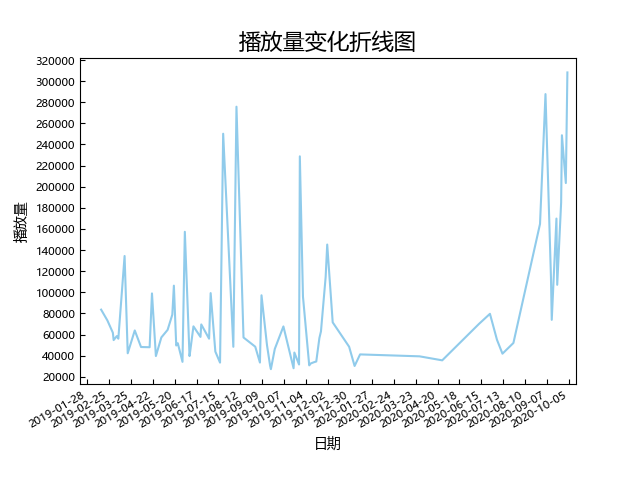

SII3.0(20190119-20201014)（第二次组阁至一期生毕业）

场次：
76（普通场：33）
平均播放量：
83885（所有公演），49749（普通公演）
中位播放量：
57269（所有公演），48423（普通公演）
标准差：
66016（所有公演），15425（普通公演）
播放量前三：
- 一期生剧场告别公演(308226)
- 20年吴哲晗生诞(287717)
- 19年七夕公演(275780)
播放量变化分析：
19年公演关注度有逐渐下滑趋势，在年底老菜皮出发选秀后和疫情期间达到低谷，但在青你结束后选秀引流期间，一期生毕业系列屡创新高。各个老菜皮大桃浦的生诞都是关注高峰。
高播放量公演推荐：
- 一期生剧场告别公演：不论是不是老菜皮的粉丝，看到一个个亲手摘下公式照的时候总是会感伤的
- 19年七夕公演：不得不说高个老菜皮们穿古装和白衬衫确实挺帅。mc3名场面，三七著名糖点。没记错的话这场是络络的千秋乐，祝前程似锦
- 19年孔肖吟生诞：mc1yyds，孙芮那段单口相声应该是河内mc的天花板了
- 20年孔肖吟生诞：那段撕衬衫的舞好色气好好看。芸姐弹吉他送祝福太美了
- 20年戴萌生诞：难顶。忽略难顶后面呆驼的场面还不错
- 20年徐晨辰&李宇琪&邱欣怡生诞：最后的原版mad world
- 19年戴萌生诞：那时候的戴萌还很帅。表演质量很高。mc3柯基扒门、萌锅过火、三钻夜蝶都xswl
- S队六周年：老菜皮们搞情怀还是很有一套的
- 19年莫寒生诞：我永远喜欢ktv，不论哪场ktv大家都很嗨，观众也很开心
- 剩下的大部分一、二期生诞都不错